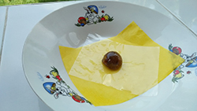

บทที่ 5 |
ในการจัดทำโครงงานการศึกษาค้นคว้าและสร้างองค์ความรู้(Research & Formation) 4.2 ตัวอย่างผลงาน
|
 |
ประโยชน์ที่ได้รับ |
1.สามารถนำผลิตภัณฑ์ที่แปรรูปแล้วไปหารายได้เสริมได้ |
ข้อเสนอแนะ |
1.สามารถนำผลิตภัณฑ์ที่เราแปรรูปนำมาหารายได้เสริมได้อีกด้วย 2.ควรศึกษาเกี่ยวกับเรื่องมะขามให้มากขึ้นเราถึงรู้มะขามนั้นมีประโยชน์มากแค่ไหน |